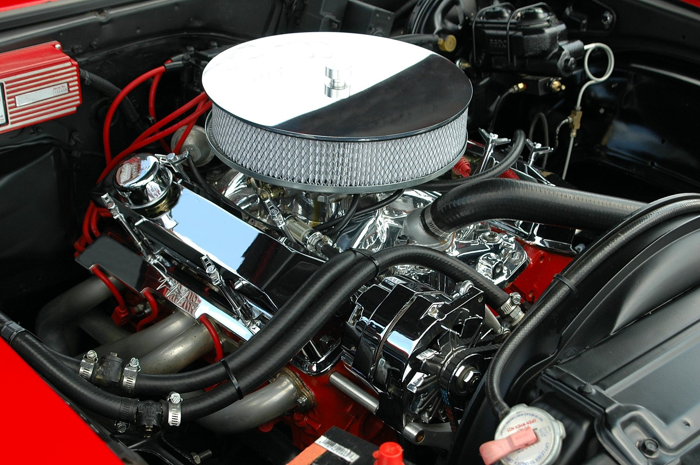
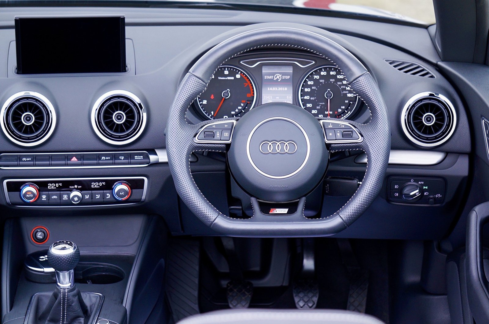

Hello, Loomrow!Lecture 6: Python I - Getting Started with Python
STA1000 - Data Analytics and Metrics
Damien Dupré
Previously …
- Lectures 2 to 5 took the Loomrow posts through Tableau: a file, the right figures, calculated fields, two files merged, and a dashboard. Assignment 1 is due on 22 November at 12pm.
Today, three questions:
- Why Python, and where do you run it, with nothing to install?
- How do you write your first lines of Python?
- What do you do when it breaks?
1. Why Python?
Why Python?
Same Data, Another Tool
Tableau
- You click: drag, drop, filter
- Excellent to explore, and to show
- The steps live in your head: to redo them next month, you click them all again
Python
- You write each step as a line
- The lines are the record: they can be checked, shared, and rerun on next month’s file in one click
- The language AI assistants write best
Tableau to show the data, Python to prepare and question it. You need both.
What Python Is Not
- Python is not a spreadsheet. There is no grid, and nothing recalculates by itself
- Python is not intelligent. It does exactly what you write, including the mistakes
- Python is not fast to write at the beginning. It becomes fast when a task has to be done twice
The value of code is reproducibility: the same lines, run on next month’s file, give next month’s answer in one second.
We do not learn programming: no loops, no functions of our own. Today, plain Python; from Lecture 7, pandas, for tables.
Language vs Interface
Python is the language; you write and run it in an interface. Python is like a car’s engine, the interface is like its dashboard.
Python: the engine

Does the work. You never look at it directly.
The interface: the dashboard

Where you type, where you see results and errors.
2. Google Colab
Google Colab
Our interface is Google Colab. In your browser:
- Go to https://colab.research.google.com
- Sign in: your DCU Google account works
- File → New notebook in Drive
Nothing to install: Python runs on Google’s computers, from any laptop.
Your notebook is a .ipynb file in Colab Notebooks, a folder of your Google Drive. Rename it from its title, top left.
A Notebook Is Made of Cells
Code cells
Hold Python. Run one, and its result appears underneath.
Add one with + Code.
Text cells
Hold your notes: what the next cell is for, and what you found.
Add one with + Text.
A notebook is a report and an analysis at the same time. A notebook with forty code cells and no text is not an analysis: it is a transcript.
Run a Cell
| Action | Windows | Mac |
|---|---|---|
| Run the cell, move to the next | Shift + Enter | ⇧ Shift + ↩︎ Return |
| Run the cell, stay on it | Ctrl + Enter | ⌘ Cmd + ↩︎ Return |
| Insert a code cell below | Ctrl + M, then B | ⌘ Cmd + M, then B |
| Turn the cell into text | Ctrl + M, then M | ⌘ Cmd + M, then M |
| Undo | Ctrl + Z | ⌘ Cmd + Z |
Or click the button at the left of the cell.
The Runtime
The first cell you run connects the notebook to a runtime: a computer at Google that holds your Python session.
- Everything you create lives there: results, tables, uploaded files
- Left idle for too long, or after 12 hours at most, the runtime is stopped and all of it is gone. Your code is safe in the notebook; your results are not
- Cells run in the order you run them, not in the order they appear
Runtime → Restart session and run all: if the notebook runs from top to bottom, it works. If it fails, it never did.
Your Turn!
Your first notebook
- Open https://colab.research.google.com, signed in with your DCU account
- File → New notebook in Drive
- Click its name, top left, and type
STA1000 Lecture 6 - In the code cell, type
print("Hello, my name is Aoife"), with your name - Run it: Shift + Enter / ⇧ Shift + ↩︎ Return
- Click + Text, top left, and type
# My first notebook - Runtime → Restart session and run all
3. Your First Python Code
print()
print() displays something under the cell.
Everything between the quotes is text, called a string. The brackets belong to print, which is a function: a name followed by brackets, that does something with what is inside them.
Python as a Calculator
A code cell also shows the value of its last line, without print():
The revenue of Loomrow’s ads divided by what they cost: €3.16 of revenue for each euro spent, the answer to Lecture 5’s dual axis.
But only the last line:
+, -, * and / as on a calculator; brackets first, as in maths: (2 + 3) * 4 is 20.
Storing a Result
A result you do not store disappears.
spend, revenue and roas are variables. The = sign does not mean equality: it means “take what is on the right, and give it this name”. Read it right to left.
Round a Result
round(value, digits) is a function with two things inside its brackets, separated by a comma: what to round, and to how many decimals. Without the second, it rounds to a whole number.
A variable can be used anywhere its value could be:
Naming Rules
Python requires:
- Letters, digits and underscores only: no spaces, no dashes
- No digit first:
2025_spendfails,spend_2025works - Case sensitive:
Spend,spendandSPENDare three different names
Convention: snake_case, short but descriptive, no accents.
Naming is not decoration. It is most of what makes code readable.
Order Matters, Twice
- Python reads a cell top to bottom
- Colab runs cells in the order you click them, not top to bottom
This is the number one cause of “but it worked five minutes ago”.
The small number in [ ] to the left of each cell tells you the order in which cells were really run.
Your Turn!
A small calculation
LR0184, the reel of 21 August 2025: 8,316 likes, comments, saves and shares, for 535,086 accounts reached. Type it in one code cell, and run it:
What does it print, and is it high or low for a post?
Solution
1.68,316 engagements, but only 1.6% of the 535,086 accounts reached: low, as the median Loomrow post engages 5.9%. A viral post is seen by many people who never react to it.
4. Every Value Has a Type
What Type Is It?
type() tells you what kind of value you are holding.
The Four Basic Types
| Type | Name | Example | Used for | In Tableau |
|---|---|---|---|---|
int |
integer | 431 |
counts: posts, reach, likes | # |
float |
decimal | 24345.78 |
euros, rates | # |
str |
string | "reel" |
text, categories | Abc |
bool |
boolean | True |
yes or no | T|F |
Lecture 7 meets them again, as the types of the 26 columns of insta-data.csv.
Type Decides What Works
--------------------------------------------------------------------------- TypeError Traceback (most recent call last) Cell In[36], line 1 ----> 1 2 + "3" TypeError: unsupported operand type(s) for +: 'int' and 'str'
Same operator +, three different behaviours. Read the type before blaming the operator.
Numbers That Are Not Numbers
Between quotes, "5184" is text, not a number: reach_text + 1 fails. Convert it first:
int() gives a whole number, float() a decimal. A column that looks numeric but is stored as text is the most common surprise when a file is read: Lecture 7 shows how to spot it.
True or False
A comparison gives a boolean, True or False:
Text can be compared too, and case matters:
= stores, == compares. Mixing them up happens to everyone.
Your Turn!
Text or number?
Copied from the Instagram app, LR0184’s reach arrives between quotes. Type each block in its own code cell, and run it:
Block 2 fails on purpose: why?
Solution
| Block | Result | Why |
|---|---|---|
1. type(reach_text) |
str |
between quotes, a number is text |
2. reach_text > 100 * 5184 |
TypeError |
text cannot be compared with a number |
3. reach > 100 * 5184 |
True |
int() made it a number: 535,086 is more than 518,400 |
LR0184 alone reached more accounts than 103 typical posts. Numbers copied or exported as text are common: check the type first.
5. When It Breaks
Errors Are Normal
- Beginners think an error means they failed
- Professionals see thirty errors before lunch
- An error is Python telling you exactly where it stopped
The one skill that separates people who learn to code from people who give up is reading the error message.
Anatomy of an Error
--------------------------------------------------------------------------- TypeError Traceback (most recent call last) Cell In[41], line 1 ----> 1 print("Loomrow posted " + 431 + " times") TypeError: can only concatenate str (not "int") to str
Read it bottom up:
- Last line: the type of error, and a description
- Above it: the line of your code that caused it, with an arrow
TypeErrorhere means: you cannot add text and a number.print("Loomrow posted", 431, "times")works
The Errors You Will Meet This Month
Cell In[42], line 1 print("hello) ^ SyntaxError: unterminated string literal (detected at line 1)
SyntaxError: a quote or a bracket is not closed. Look at the line mentioned, and at the one before.
--------------------------------------------------------------------------- NameError Traceback (most recent call last) Cell In[43], line 1 ----> 1 print(revenu) NameError: name 'revenu' is not defined
NameError: the name does not exist. Almost always a typo, or a cell you did not run.
The Errors You Will Meet This Month
--------------------------------------------------------------------------- TypeError Traceback (most recent call last) Cell In[44], line 1 ----> 1 print("5" * "3") TypeError: can't multiply sequence by non-int of type 'str'
TypeError: the operation makes no sense for these kinds of value.
--------------------------------------------------------------------------- NameError Traceback (most recent call last) Cell In[45], line 1 ----> 1 Print("hello") NameError: name 'Print' is not defined
NameError again, and the reason matters: Python is case sensitive. Print, print and PRINT are three different names.
How to Solve an Error
- Read the last line of the message
- Look at the line it points to, and the one above
- Check the obvious: capital letters, quotes, brackets, commas
- Copy the error message into a search engine or an AI assistant
- Ask a neighbour, then ask me
Steps 1 to 3 solve most errors in this module, and they take twenty seconds.
Until Lecture 10, type the code yourself, and ask an AI assistant to explain, not to write: a line you cannot read is a line you cannot check.
Your Turn!
Break it, fix it
This cell should print what each of Meta’s 833 purchases cost, but it holds three mistakes:
- Type it in one code cell, as it is, and run it
- Read the last line of the error
- Fix that one mistake, and run it again
- Repeat until the cost prints twice
Solution
Cost per purchase: 29.22662665066026
29.23€29.23 of ad spend for each purchase. Three errors, three lessons: a name must be spelt the same way every time, text and numbers do not add up, and Print is not print. Stuck on an error? Paste it into an AI assistant and ask it to explain it in one sentence.

Thanks for your attention and don’t hesitate to ask if you have any questions!
Comments
Anything after a
#is ignored by Python.Comments are written for the person reading the code in six months, who is almost always you.
Write comments explaining why, not what.
# divideis useless.# revenue per euro spent on Meta ads, all campaignsis gold.